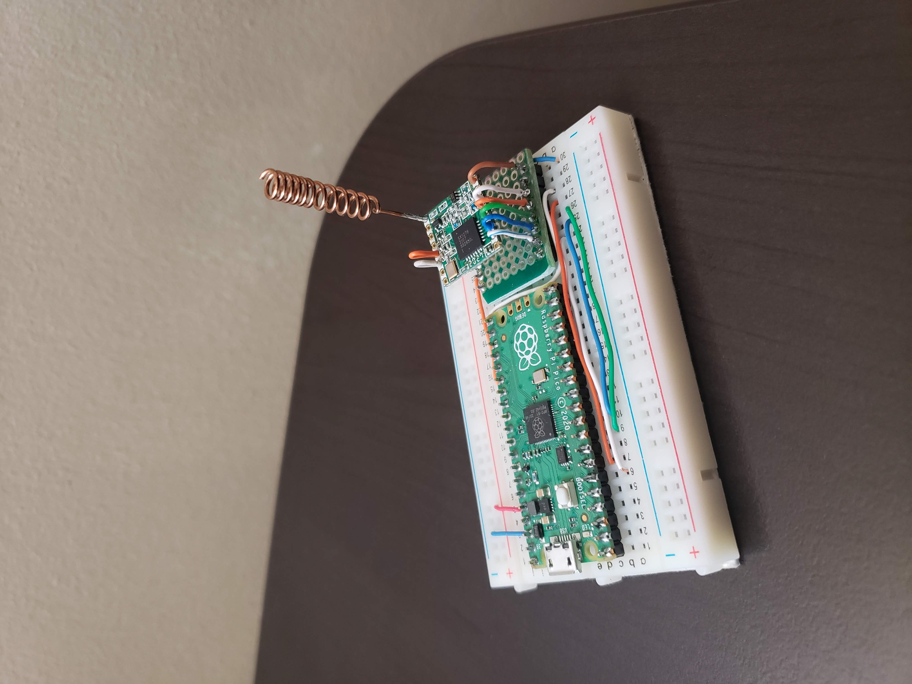

Bienvenido a InverLoRa
En esta paguina se podran consultar los estados de los sensores y actuadores LoRa
Estado de modulos de la Red
Equipos
estatdo
bateria
gateWay
ON
4.2 V
nodoSensor
ON
4.3 V
nodoActuador
OFF
0.0 V
tabla de ejemplo, no muestra datos reales
